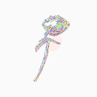
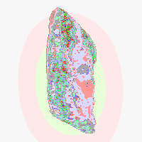

macOS 13+ · 本地优先 · 数据不出本机
CEVTUO-PET — 和 Cevtuo C4emem 共用同一个引擎
01 — 它是什么
它一直待在桌面上。鼠标放上去就摊开一圈，左边是你正在运行的软件 —— 点一个就把它叫到最前面， 连找 Dock 那一步都省了。右边是它自己的入口。
摸一下 → 一圈正在跑的软件摊开 → 敲首字母直接切过去
展开就是一整圈，按软件名的首字母敲一下就直接切过去 —— 全程不用碰鼠标。
只列真的在运行的那些：退掉的软件不会留在圈里（这一条专门验过）。
它就不展开那一圈了，点一下直接切过去。适合"一天就盯着一个东西用"。
两个开关自己挑。至少留一个 —— 两个都关掉就没有入口能把它叫回来了。
右键点它，是完整的那个列表：勾几个、一起退掉。
02 — 它长什么样
卡片 / 珍珠 / 银 / 铅 / 锌，加上你和它一起做出来的那些。每一种都能转，也都能定住。
依次换过去：卡片 → 珍珠 → 银（转）→ 银（不转）→ 锌 → 铅
⚠️ 这件事比看起来难：「银 / 铅 / 锌」原本是动图 WebP（无限循环）， CSS 停不掉它 —— 你把「不转」打开，它照转不误。现在这三种也走 3D，贴图只取一帧。
验收判据是像素：不转的那两张截图逐字节相同；而且还要证明"那不是一张空图"。
03 — 一起造一只新的
给它一张图，它抠掉背景、在本机算出这张图的深浅，然后重建成一只可以转的立体。 不是把同一张图叠几层那种"假厚度"。
选一张图 → 抠底 → 量深度（约 4 秒）→ 预览里那一只已经在转 → 起个名字装上去


⌘V 直接粘贴（截图之后最顺手）· 把文件拖到窗口任何地方 ·
点「选文件」· 贴一个网址（直接给图片地址也认，没写 https:// 会自动补）。
本来就是透明底的直接用；背景太杂抠不动 ⇒ 原样不抠照样能做 3D。 只有"连图都读不动"才算失败。
用的是 Depth Anything V2 (Small) 的 ONNX 版 + onnxruntime(WASM) + three.js， 34MB 已经打进包里。一张图约 4 秒，不联网、不上传任何东西。
在 3D 这条路做出来之前做的宠物，列表里会多一个「做成 3D」按钮，点一下就补上。
04 — 安装
.dmg，打开，把 CEVTUO-PET 拖进「应用程序」。~/.c4emem/，不进包、不上传。